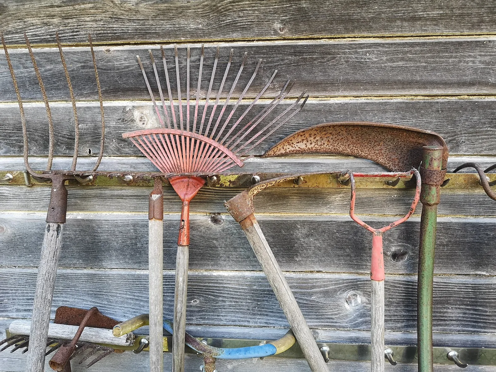

Folklore, checked
35 things gardeners are widely told, each checked against the evidence and answered in plain words. Widely believed, rarely trialled — and none of them gates a plan here. They answer the question you were going to ask.
- A layer of gravel or pot shards at the bottom of a container improves drainage. Contested
- Adding sugar or molasses to the soil makes tomatoes and other fruit sweeter. Refuted
- Basil improves the flavour of adjacent tomatoes. Contested
- Bone meal helps transplants and bulbs put down roots. Contested
- Burying banana peels feeds plants potassium (roses in particular). Contested
- Burying rusty nails adds iron that greens up plants and turns hydrangeas blue. Contested
- Chives or garlic planted under a fruit tree prevent apple scab. Contested
- Cinnamon or chamomile tea prevents damping-off in seedlings. Contested
- Coffee grounds acidify soil. Contested
- Coffee grounds scattered around plants repel slugs, snails, and other pests. Contested
- Companion planting charts encode real relationships. Refuted
- Compost tea (or manure tea) greatly boosts growth and suppresses plant disease. Contested
- Crushed eggshells deter slugs. Contested
- Crushed eggshells in the planting hole prevent blossom end rot. Refuted
- Dish soap makes a safe, effective homemade insecticide, the same as insecticidal soap. Refuted
- Epsom salts prevent blossom end rot. Refuted
- Fresh manure is a safe, ready-to-use fertiliser you can spread straight onto the garden. Refuted
- Household vinegar is an effective weed killer. Contested
- If you buy good compost or bagged soil, your native ground underneath doesn't matter. Contested
- Marigolds repel most garden pests and protect the whole garden. Contested
- Mixing sand into clay soil improves its drainage. Refuted
- More fertiliser means bigger, healthier plants. Contested
- Planting by lunar phase improves germination and yield. Contested
- Radishes deter flea beetles. Contested
- Seeds saved from hybrid vegetables grow true to the parent plant. Contested
- Spraying diluted milk on the leaves prevents or cures powdery mildew. Contested
- Spraying plants with dissolved aspirin boosts their immune system and health. Contested
- Spreading cornmeal on soil or lawns cures fungal disease. Contested
- Sprinkling baking soda around tomato plants makes the fruit sweeter. Refuted
- Sprinkling human hair, soap shavings, or urine around the garden reliably keeps deer and rabbits out. Contested
- Talking to your plants, or playing them music, makes them grow better. Contested
- Watering a little every day is the best way to water a garden. Contested
- Watering plants in the midday sun scorches the leaves (water droplets focus sunlight like lenses). Refuted
- Watering with hydrogen peroxide oxygenates the roots and cures root rot. Contested
- You must rotate every crop to new ground every single year. Contested